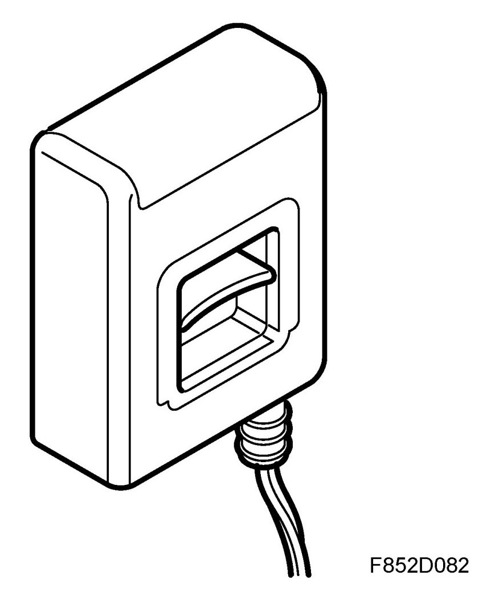
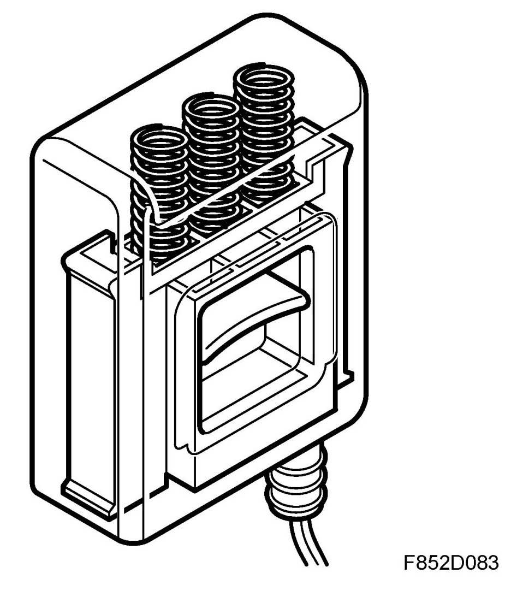
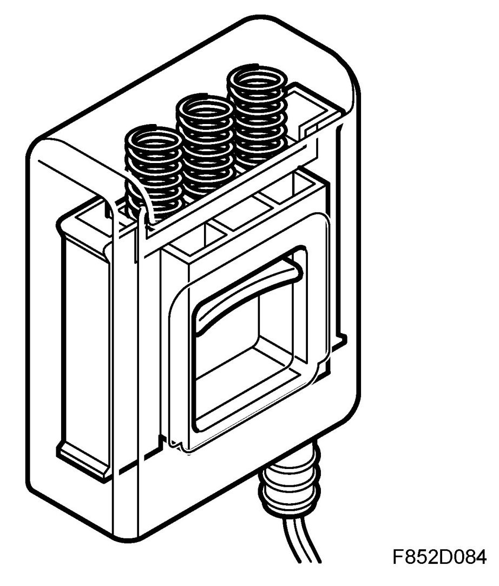
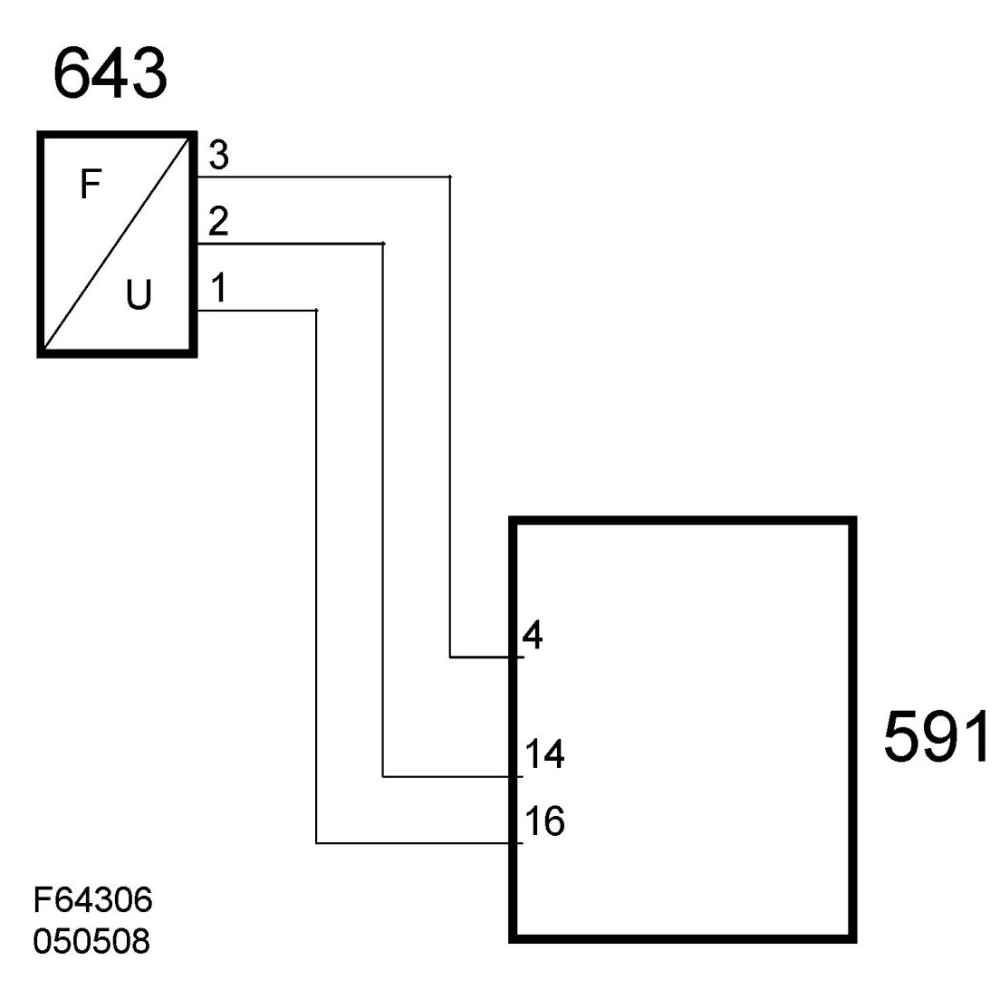

Force Sensor, Front Passenger Seat Belt (643)
Force Sensor, Front Passenger Seat Belt (643)
Location
Force sensor, front passenger seat belt (643)

Main task
The belt force sensor provides the PPS control module with information on the tension of the belt.
Type
Pressure sensor of Hall type.


Connect
The pressure sensor (643) is supplied with 5 volts on pin 1 from control module (591) pin 16 and grounded on pin 2 via control module (591) pin 14. The signal from the force sensor pin 3 is connected to pin 4 on the control module (591).
Wiring diagram, power supply
